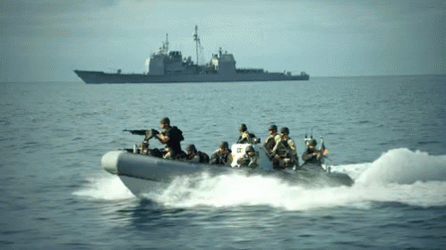
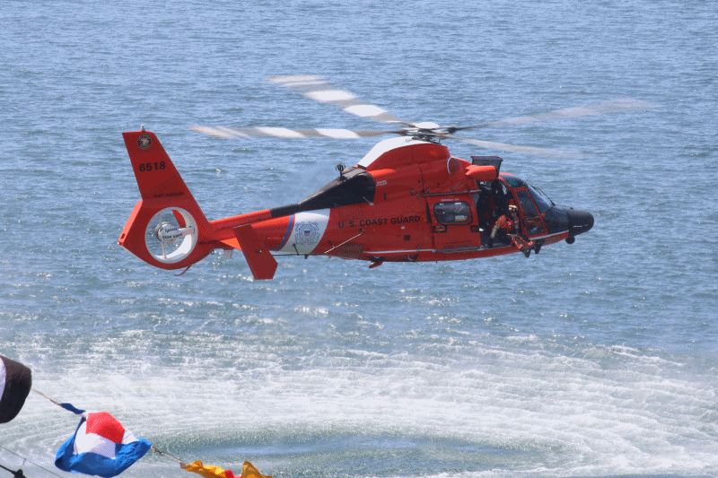

Before you can join any branch of the Military, you must first take an aptitude test known as the
ASVAB click the link to learn more.
The Army.
The Army is the oldest branch of the military having been created in 1775. Although the Army does have some aviation units, the sole amount
of missions are ground-based. Here is a link to a recruiting website that can help you
find an army recruiter in your area!
The Navy.

The Navy controls all military missions occuring at sea. It has more than 381,000 sailors on active
duty, including more than 53,000 officers and 323,000 enlisted sailors. Here is a link to a
Navy recruiting site.
The Marine Corp.
The Marines are a part of the Department of the Navy and operate in close cooperation with U.S. Naval forces at sea. They are the 911 of the nations
uniformed services because they are always ready to respond to any threat - anywhere in the world.
Here is a link to a recruiting website for Marines.
The Coast Guard.

The Coast Guard is in charge for the enforcement of maritime law and for the protection of life and property at sea. In time of war, or at the direction of
the president, the Coast Guard serves as part of the US Navy. Here
is a link to a Coast Guard recruiting website.
The Air Force.
The branch of a nation's armed services that conducts military operations in the air.
Here is a link to an Air Force Recruiting website.